The problem
0.003€what an artist earns per stream
Social media gives artists reach, but no real relationship with the fans who were there first. Most fans say they would support their artists directly if there were a good way to do it.
Two apps, one product
Fans want to discover and feel close. Artists want to publish, reward and understand their community. One interface for both would have made each side worse, so I designed two role-based apps on one shared system. The same profile and the same rewards look different depending on who is holding the phone.
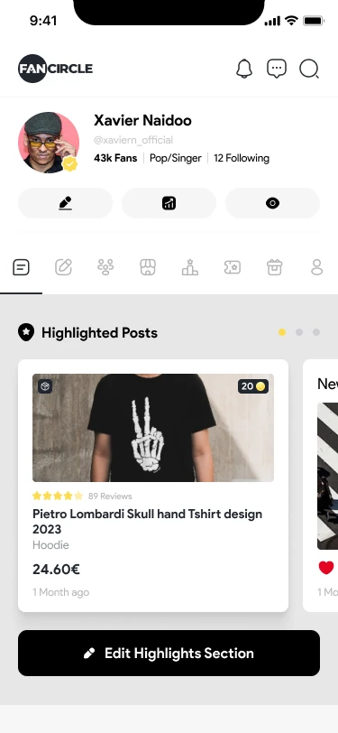
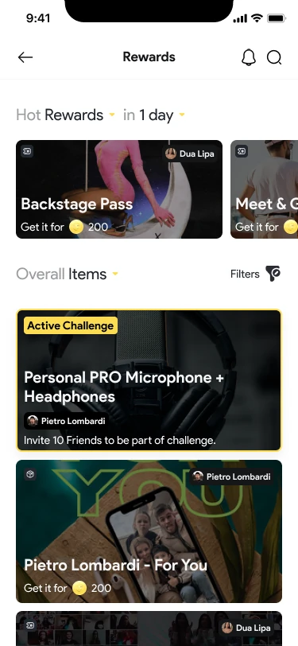
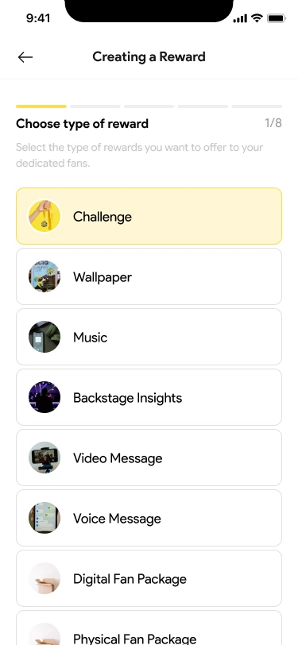
SongMatch: discovery like dating
Scrolling a catalogue is tiring. I borrowed a gesture everyone knows: swipe right to like a song, left to skip. Every like lands in a playlist the fan can keep.
First version: a Stop button. Fans heard a clip and tapped Stop to react.
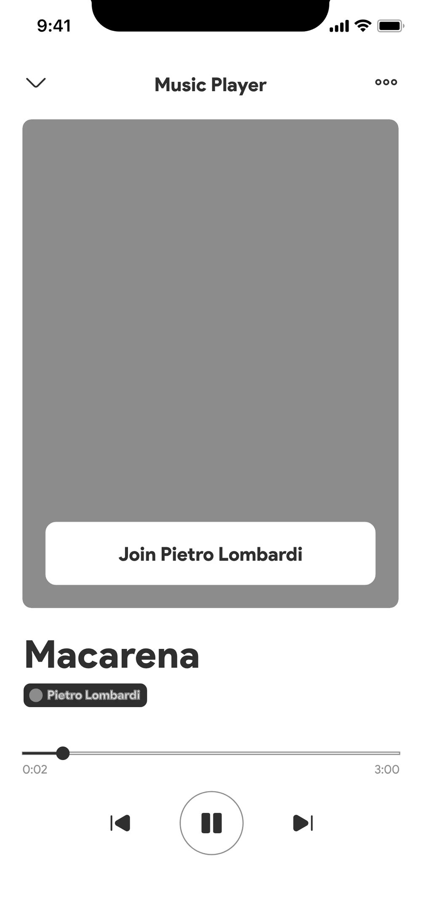
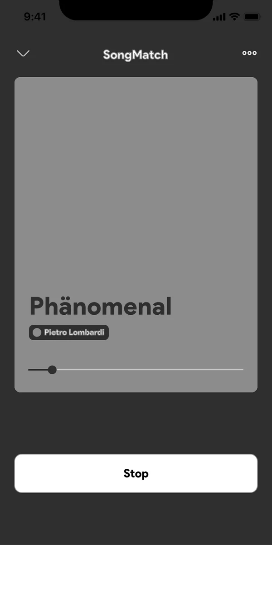
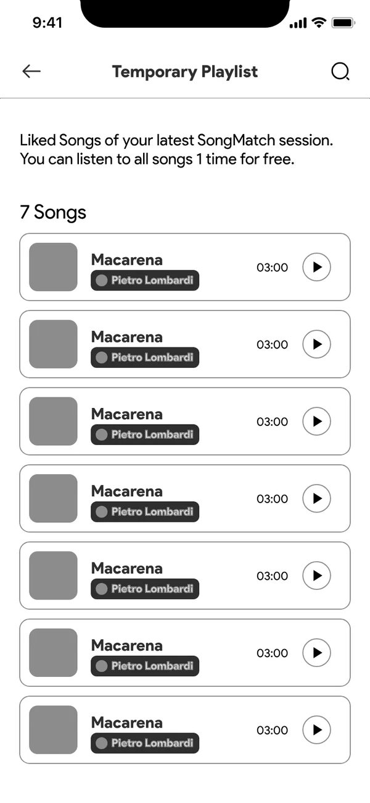
The final design: one swipe does both. A swipe is the answer and the next song in one move.
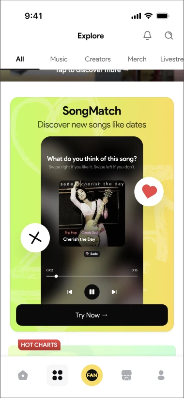
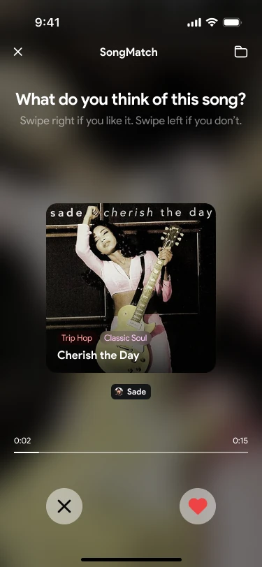
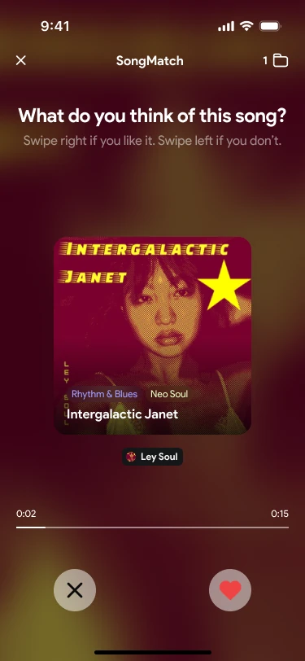
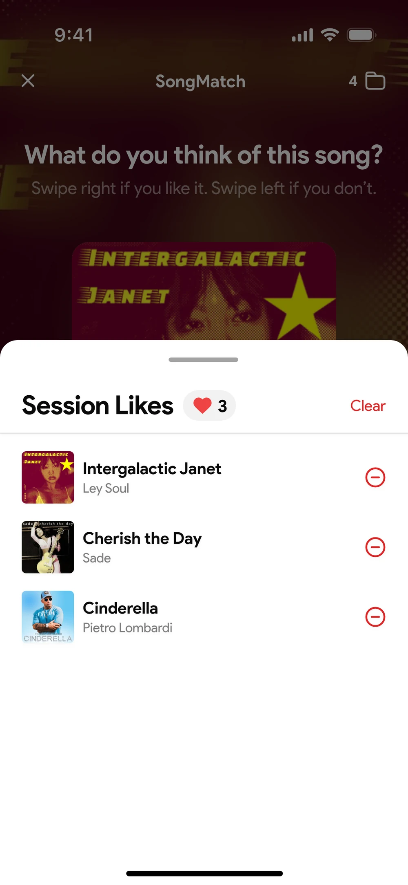
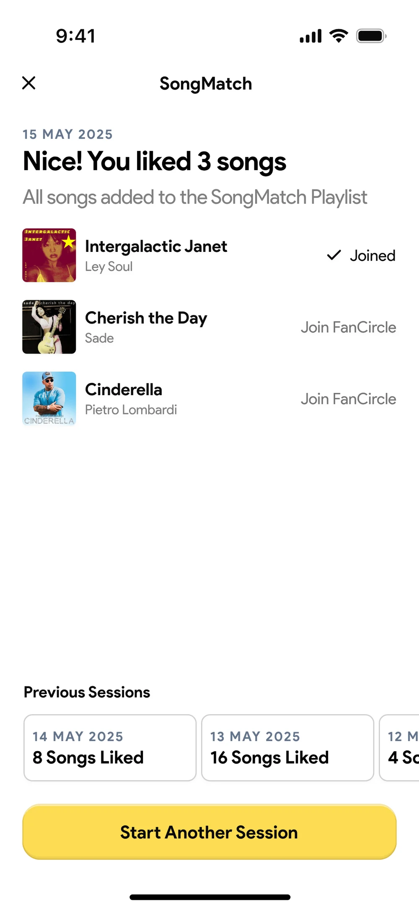
For artists: pay to be heard, see if it worked
Fans swipe, but artists need a way into that stack. The artist side is a short setup: choose the clip fans will hear, pick a plan, review before paying.
First version: three targets to set. Artists set cost, duration and views as three separate targets.
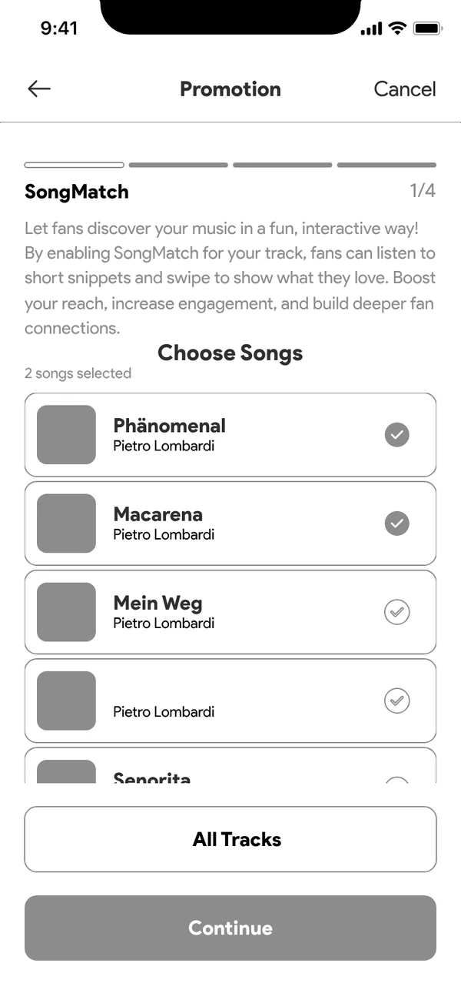
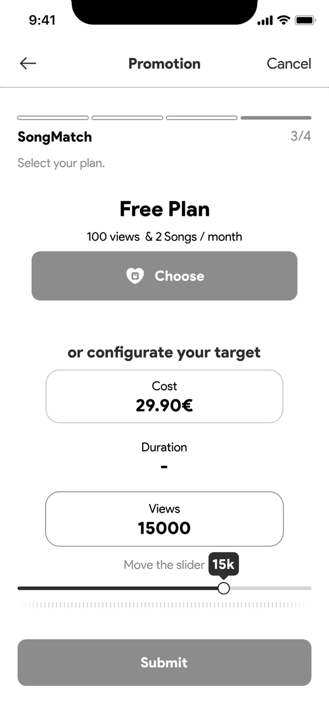
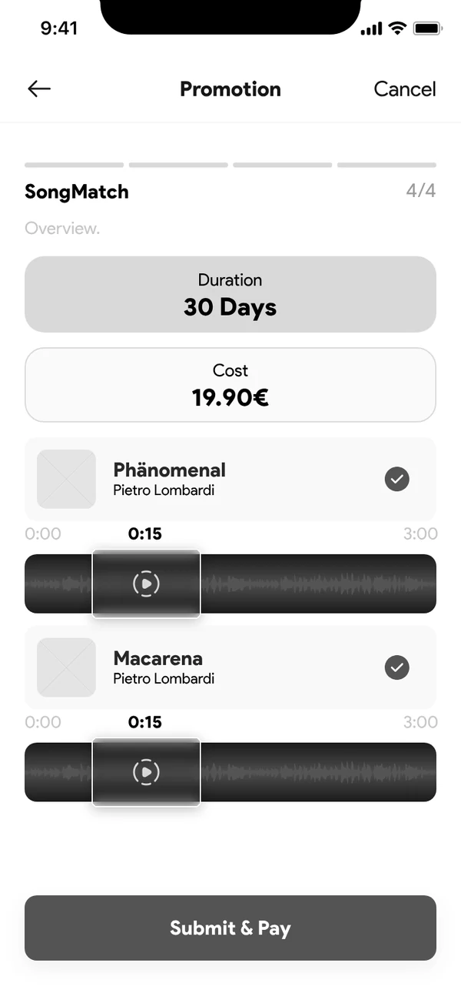
The final design: one choice, with what it buys. The plan is just how long it runs, shown with the estimated listens.
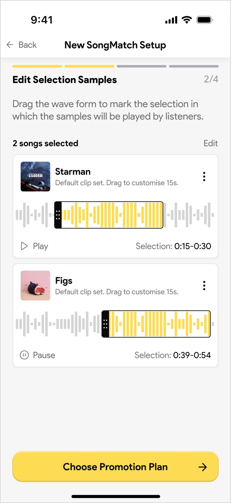
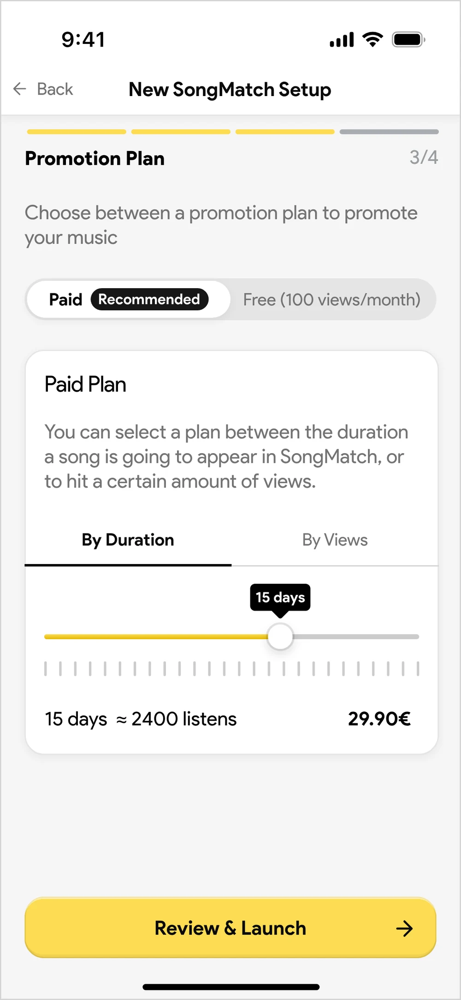
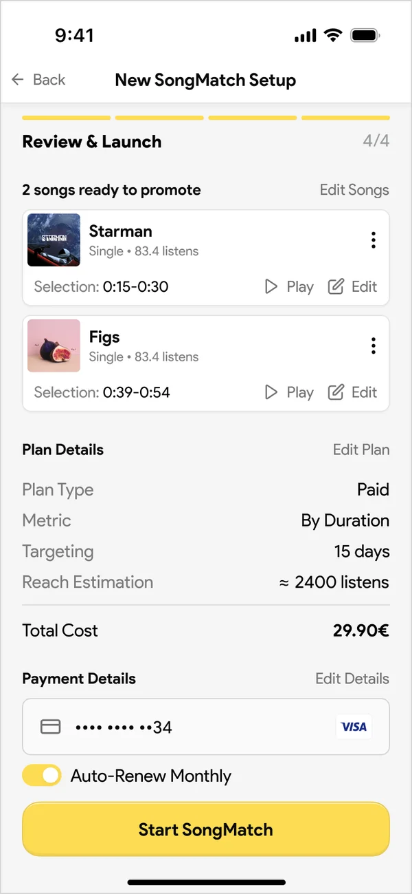
- The artist picks the 15 seconds. A fan decides in one hook, so the artist chooses which part plays, starting from a default clip.
- Every price shows what it buys. Plans show estimated listens next to the cost, and a free tier (100 views a month) lets new artists try it first.
- Results in fans, not impressions. Each promotion shows likes against skips and new followers, with a prompt to renew as it ends.
After launch: did it work?
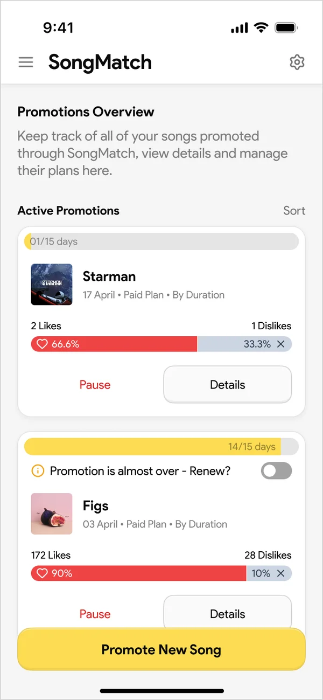
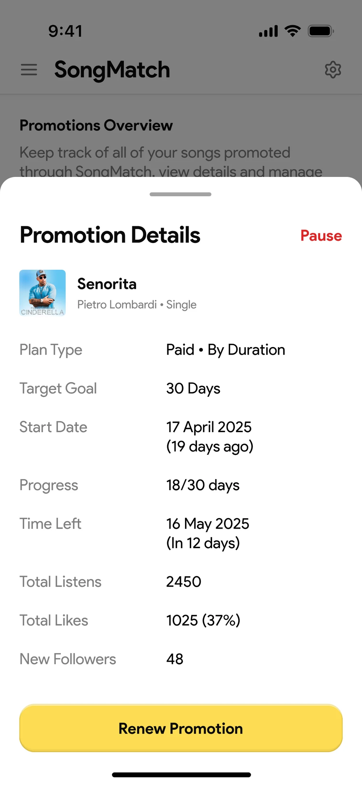
Creative Room: feedback pinned to the moment
"The middle part feels off" wastes everyone's time. In Creative Room, collaborators select part of the waveform and leave a note right there, and a timeline keeps every upload, comment and task in order.
First version: mapped before it was drawn. Open a file, mark a moment or a section, write the note.
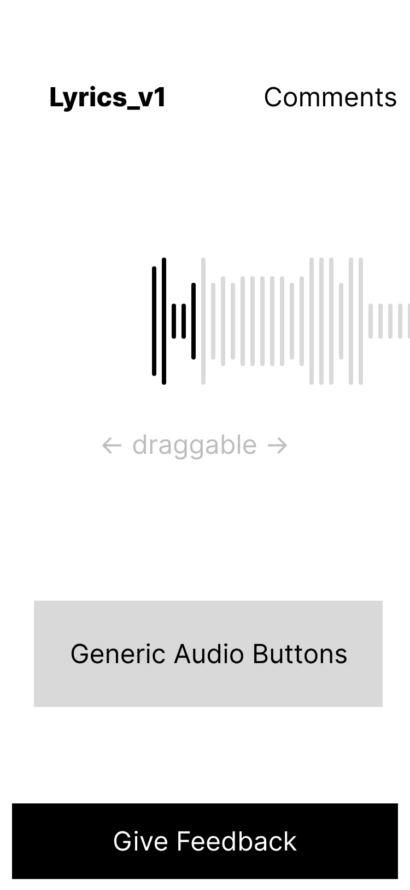
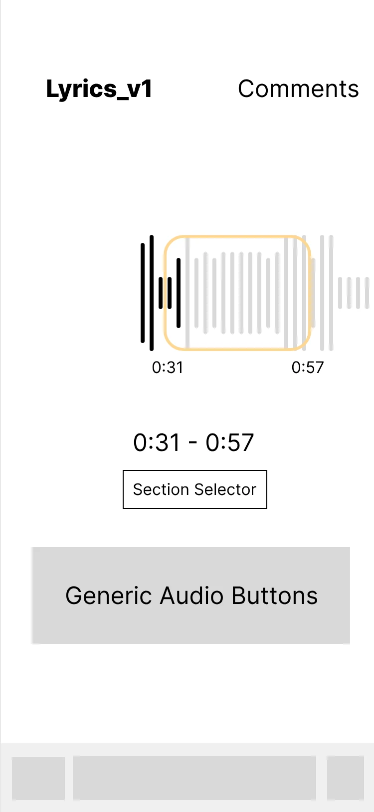
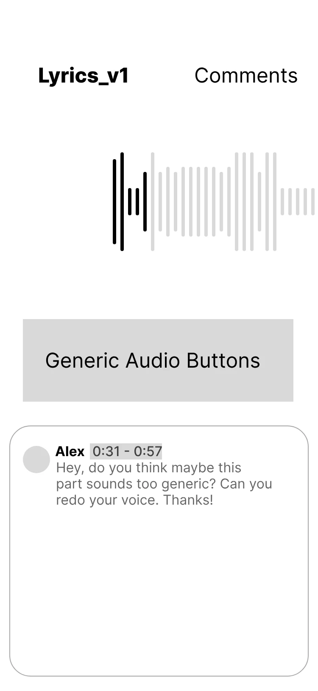
The final design: the note lives on the waveform. Anyone opening the track sees exactly where each comment points.
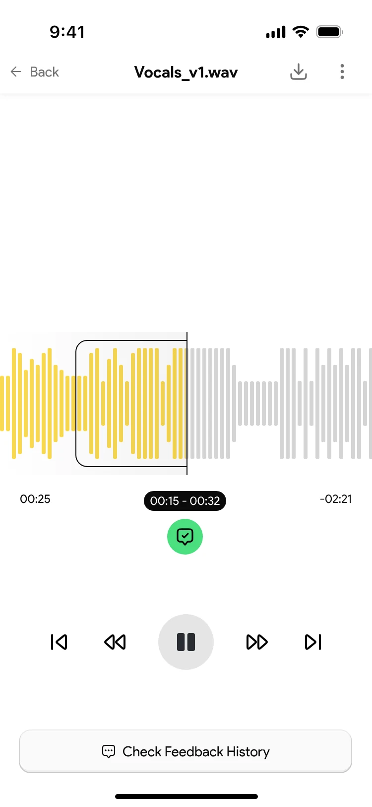
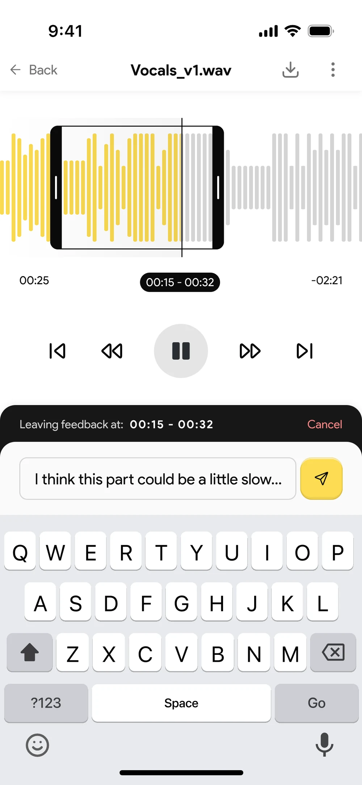
Try it. Drag across the track and leave a note on the part you mean.
Outcome
50+artists committed before launch
Won with the app prototypes and pitch decks I designed. v1.0 was designed and built for iOS and Android, and the brand got a registered EU trademark.
The product did not take off. The company ran out of money before it found its users.
What I'd do differently
Saying no to features is part of the job.
Our scope grew faster than the team could build, and the core loop was never tested on its own. Today I'd push for a tight MVP around that one loop, agree on a single success metric, and put it in front of real fans first.